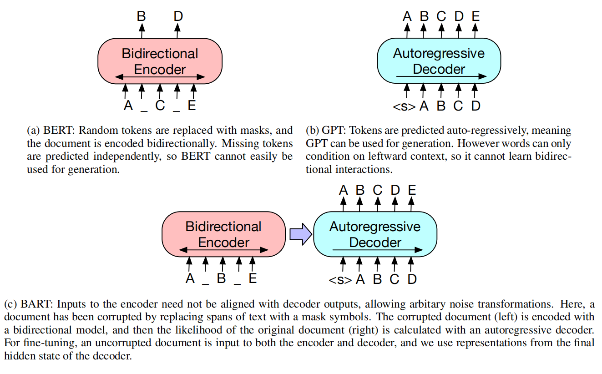
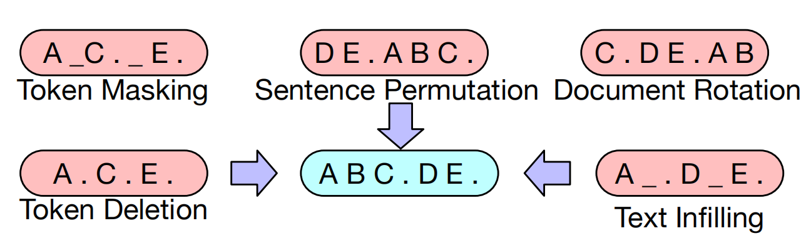
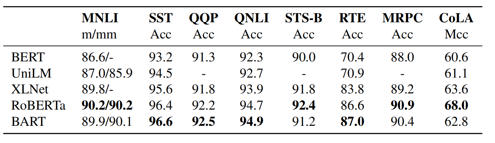

BART
简介
BART 是 Facebook AI 于 2019 年发表的《Denoising Sequence-to-Sequence Pre-training for Natural Language Generation, Translation, and Comprehension》论文中提出的预训练模型，论文收录于 2020 年 ACL。顾名思义，BART 是一个基于 seq2seq 的预训练模型，可以用于自然语言生成、翻译、理解等任务。论文中的 “Denoising” 直译为降噪，实际上是模型的预训练目标。
一个水逆的周末，博客更新不能停！
模型
预训练模型之前已经介绍过了，参考 BERT。这里只做简单的介绍。预训练模型的目的是在大量数据上预训练一个能够解决通用任务的模型，下游任务可以在预训练模型的基础上进行调整适配，无需从头训练。预训练模型往往有几个关键因素：
- 模型架构。Transformer 是公认的特征抽取能力很强的架构，因此常见的预训练模型都是用的 Transformer 架构。
- 预训练目标。在 BERT 之前，预训练模型往往都是按照标准的语言模型进行训练，例如 ELMO。BERT 第一次提出了掩码语言模型这样的预训练任务，不仅能够更好地适配下游任务，而且取得了更优的效果。如何能够挑选一个更好的预训练目标来建模通用任务，也是预训练模型的关键。
- 适用任务及使用方法。虽然预训练模型是为建模通用任务而存在的，然而还是存在适用任务的限制，具体任务对使用方法也有要求。
- 数据集。要求很简单，大而全。大就不用说了，数据集最好能够涵盖多个领域的数据，这样适配下游任务也会更简单。
- 效果。事实上没有个 state-of-the-art 都不太可能发出来，相对没有那么重要。
按照这个顺序，我们来介绍一下 BART 模型。
架构
基于 Transformer 的 seq2seq 模型，与 GPT 和 BERT 一样，使用的激活函数是 gelu 而不是 relu。与 BERT 的区别在于：
- 有解码器、在解码器的每一层，添加了对编码器最后一层输出的注意力，跟 seq2seq 的注意力一致。
- BART 去掉了在词预测之前的前馈神经网络。
总结一下就是个 Transformer。与 BERT 的主要区别在于有解码器，可以用于生成任务，与 GPT 的主要区别在于有编码器，可以更好地用于监督的生成任务，如下图所示。

预训练目标
BART 的预训练目标定义为：给定文档，使用噪声函数（符号遮挡、符号删除、符号填充、文档排列、文档旋转）对文档施加噪声，再进行文档重构。换而言之，输入为有噪声的文档，期望输出为没有噪声的文档，这正是论文名中的 “降噪” 的由来。 在实验过程中，噪声可能是以上噪声函数的组合。几种噪声函数的示例分别如下：

适用任务
BART 可适用于以下任务：
- 句子分类，输入输出均为该序列，将解码器的最终隐藏状态拿去分类即可，类似 BERT 中的 [CLS] token。
- 符号分类，输入输出均为该序列，将解码器每个位置的隐藏状态拿去分类即可。
- 序列生成，例如文本摘要、问答等任务，给定输入输出进行 fine-tune 即可。
- 目标语言为英语的机器翻译，这个任务其实也属于序列生成，不过有点不太一样。具体做法为，将 BART 的编码器随机初始化（就是丢弃本来的权重），然后冻结其他参数只更新编码器权重，后面再微调所有权重。这里限制为英语主要是 BART 本身在英文语料上训练的。
实验
预训练目标比较
为了评估各种预训练目标的有效性，BART 在尽量控制变量（分别调优，学习率、正则化可能有所差别）的前提下比较了如下几种预训练目标：
- 语言模型，与 GPT 类似，从左向右的语言模型
- 置换语言模型，基于 XLNET，对 1/6 的符号进行采样，再进行自回归预测
- 掩码语言模型，与 BERT 类似
- 多任务掩码语言模型，与 uniLM 类似
- 掩码 seq2seq：掩码 50% 的序列，由 seq2seq 预测
通过在问答、对话、摘要等多项任务上进行比较，论文得出以下结论：
- 预训练目标的性能与下游任务有着很密切的关系，一个简单的语言模型可以在生成式问答上取得最优效果，在抽取式问答上效果确实最差的
- 符号遮挡是至关重要的，没有符号遮挡的文档旋转、句子重排的预训练目标表现较差
- 从左到右的语言模型预训练任务能改善生成任务，像掩码语言模型和置换语言模型不包含自回归语言模型训练任务，生成任务效果就会比较差
- 双向编码器对 SQuAD 数据集是非常重要的
- 预训练目标并非唯一重要的因素，任务性能也与模型结构等因素有很大关系
- 纯粹的语言模型在 ELI5 数据集上取得了最好的性能
- 使用文本填充预训练的 BART 取得了大部分数据集上的最优性能
大规模预训练
判别任务
在两个数据集上进行实验：
- SQuAD（Stanford Question Answering Dataset，斯坦福问答数据集）：给定一篇文章和一个问题，从原文中选取部分文字作为问题的答案（答案一定原文中）。虽然是问答任务，但是并不是生成式的任务，而是判别式的任务。
- GLUE（General Language Understanding Evaluation，通用语言理解评估）：由九个任务组成，每个任务都是句子或句子对的分类任务，例如 CoLA 对单句子是否符合文法进行评估，QQP 评估一对问题是否等价。

两个数据集上的实验结果显示，BART 可以和 RoBERTa 打的有来有回。
生成任务
分别在摘要生成、对话、问答生成、翻译多个任务上进行了实验，数据集分别介绍如下：
- CNN/DailyMail 和 XSum 是摘要生成的两个英文数据集。每个数据样本由文档与人工总结的摘要组成。与抽取式摘要任务不同，摘要中可以出现文档中未出现的单词或者句子。
- CONVAI 是一个对话数据集，回复不仅取决于上下文，还取决于对话人的角色信息，换而言之，模型需要根据上下文和角色信息生成合适的回复。
- ELI5 是一个生成式问答数据集，根据文档回答指定的问题。
- WMT16 是一个翻译数据集，涵盖了多种语料到英语的翻译数据。
在四项生成任务上的评估表明，BART 都取得了 SOTA 的性能。
总结
BART 是一个基于 Transformer 架构的去噪 seq2seq 模型，通过破坏和重建原始文本进行预训练，在自然语言理解任务上与现有模型难分伯仲，但在自然语言生成任务上达到了 SOTA 的性能。
预训练模型简单分为三类：
- 仅编码器，如 BERT，可以直接用于自然语言理解任务，或者加个解码器再用于生成任务。
- 仅解码器，如 GPT，可以直接用于自然语言生成任务，或者加个编码器可以用于条件生成任务。
- 编码器 + 解码器，如 BART，可以同时直接用于两种任务。
后面可能会读一下 RoBERTa 的论文。